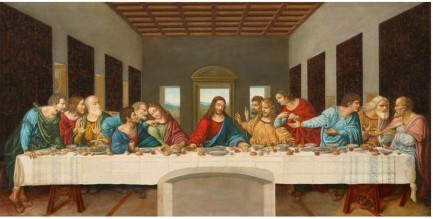

By dipping his hand into the relish “with” Jesus and not waiting until Jesus as leader had dipped, Judas asserted his leadership over the group, according to one interpretation.

The Last Supper Leonardo da Vinci